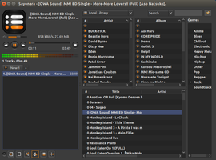
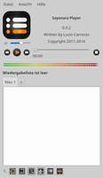
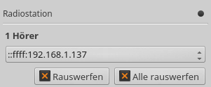
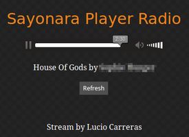
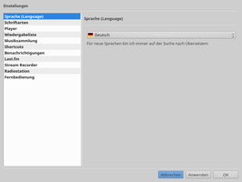

Sayonara
Dieser Artikel wurde für die folgenden Ubuntu-Versionen getestet:
Ubuntu 16.04 Xenial Xerus
Ubuntu 14.04 Trusty Tahr
Zum Verständnis dieses Artikels sind folgende Seiten hilfreich:
|  |
| Standardansicht |
Sayonara  ist ein Audioplayer, dessen Möglichkeiten weit über die normalen Funktionen eines solchen hinausgehen. Dennoch sind Geschwindigkeit und sparsame Ressourcennutzung (Prozessor, Arbeitsspeicher) wichtige Eckpunkte bei der Programmentwicklung.
ist ein Audioplayer, dessen Möglichkeiten weit über die normalen Funktionen eines solchen hinausgehen. Dennoch sind Geschwindigkeit und sparsame Ressourcennutzung (Prozessor, Arbeitsspeicher) wichtige Eckpunkte bei der Programmentwicklung.
Funktionen:
(dynamische) Wiedergabelisten in Tabs organisieren
Last.fm-Scrobbling
Podcasts
Verschiedene Oszillogramme (Pegelanzeigen)
Equalizer
Crossfader
Tag-Editor (nur ID3V2 bzw. MP3)
MP3-Konvertierung
Anpassen der Abspielgeschwindigkeit
Unterstützung von Replay Gain
Lückenlose Wiedergabe (Gapless Playback)
"Minimize to tray": Status-Symbol mit Programmsteuerung
OSD-Benachrichtigungen
Integration von SomaFM
und SoundCloud Integrierter Streaming-Server
Stream-Recorder
Als Grundlagen dienen das Multimedia-Framework GStreamer und die Grafikbibliothek Qt 5. Zur Katalogisierung der Musikbibliothek werden SQLite-Datenbanken verwendet.
Installation¶
 Das Programm ist nicht in den offiziellen Paketquellen enthalten. Daher muss man auf das "Personal Packages Archiv" (PPA) [1] des Entwicklers ausweichen.
Das Programm ist nicht in den offiziellen Paketquellen enthalten. Daher muss man auf das "Personal Packages Archiv" (PPA) [1] des Entwicklers ausweichen.
PPA¶
Adresszeile zum Hinzufügen des PPAs:
ppa:lucioc/sayonara
Hinweis!
Zusätzliche Fremdquellen können das System gefährden.
Ein PPA unterstützt nicht zwangsläufig alle Ubuntu-Versionen. Weitere Informationen sind der  PPA-Beschreibung des Eigentümers/Teams lucioc zu entnehmen.
PPA-Beschreibung des Eigentümers/Teams lucioc zu entnehmen.
Damit Pakete aus dem PPA genutzt werden können, müssen die Paketquellen neu eingelesen werden.
Nach dem Aktualisieren der Paketquellen kann folgendes Paket installiert werden [2]:
sayonara (ppa)
 mit apturl
mit apturl
Paketliste zum Kopieren:
sudo apt-get install sayonara
sudo aptitude install sayonara
Verwendung¶
Bei Ubuntu-Varianten mit einem Anwendungsmenü findet man einen Programmstarter unter "Multimedia -> Sayonara Player" [3]. Ansonsten verwendet man den Programmnamen bzw. den Befehl sayonara.
|  |
| Programmfenster mit Pegelanzeige |
Beim ersten Programmstart sollten zwei Punkte beachtet werden:
Die Umstellung auf die gewünschte Sprache (via "File -> Preferences... -> Language")
Der Pfad zur Musikbibliothek (im Regelfall ~/Musik/ im Homeverzeichnis)). In der getesteten Version 0.9.2 kann nur ein Ordner ausgewählt werden.
Prinzipiell ist das Programmfenster in drei untereinander angeordnete Abschnitte unterteilt (von oben nach unten):
Infobereich; dient auch zur Anzeige eines Coverbilds
Bereich für verschiedene Anzeigen wie Pegelanzeige, Equalizer, usw. Die Auswahl erfolgt über den Menüpunkt "Ansicht".
Wiedergabelisten
Rechts daneben dient ein vierter Abschnitt zur Anzeige der Musikbibliothek, der sich über "Ansicht -> Musiksammlung" oder mit der Tastenkombination Strg + L ein- und ausblenden lässt.
Musikbibliothek¶
Die "lokale Bibliothek" bietet einen Überblick der lokal gespeicherten Audiodateien. Gegliedert werden diese nach Künstler, Album und Genre. Zur Wiedergabe fügt man den oder die gewünschten Titel einer der Wiedergabelisten links unten hinzu und startet die Wiedergabe.
Zusätzlich kann hier auf die Stream-Verzeichnisse von SomaFM und SoundCloud zugegriffen werden. Während bei SomaFM pro Sparte jeweils ein MP3- und ein AAC-Stream zur Auswahl steht, sind bei SoundCloud drei Künstler vorausgewählt. Weitere Interpreten sind über die Suchfunktion zugänglich und lassen sich auf Wunsch innerhalb der SoundCloud-Auswahl speichern.
Ansicht¶
Unter diesem Menüpunkt sind verschiedene Funktionen zusammengefasst, die sich unterhalb des Infobereichs einblenden lassen. Allerdings kann immer nur eine dieser Funktionen gleichzeitig angezeigt werden. Dies sind im Einzelnen:
"Pegel" - klassische 2-Kanal-Pegelanzeige
"Spektrum" - grafisches Spektrogramm
"Equalizer" - 10-Band-Equalizer mit mehreren vordefinierten Filtern
"Online Streams" - Internetradio wiedergeben
"Podcasts" - Podcasts wiedergeben
"Wiedergabelisten"
"Audio Konvertierung" - Umwandeln von Musikstücken; neben der Qualitätsstufe kann auch die Bitrate beeinflusst werden (entweder konstant (CBR) oder variabel (VBR))
"Lesezeichen"
"Geschwindigkeit/Tonhöhe"
"Radiostation" - Wiedergabe als Stream senden
"Crossfader" - zwischen zwei Titeln überblenden
Designs¶
Sayonara bietet zwei Themen, zwischen denen mit der Taste F10 gewechselt werden kann: ein dunkles (Standard) und ein helles Design, das sich am Standardthema des Desktops orientiert.
Internetradio¶
Um ein Internetradio hinzuzufügen, wird neben einem beliebig wählbaren Namen die Stream-URL benötigt. Diese ist beispielsweise den im Artikel Internetradio/Streamadressen ermitteln genannten Stream-Verzeichnissen zu entnehmen. Dabei sollten URLs bevorzugt werden, die auf .m3u oder .pls enden. Webradios mit proprietären Stream-Formaten (Flash, Windows-Streams) können nicht abgespielt werden.
Aktiviert wird diese Funktion über "Ansicht -> Online Streams".
Podcasts¶
Prinzipiell wie oben bei Internetradio beschrieben, nur dass statt einer Stream-URL eine Feed-URL benötigt wird. Diese kann z.B. via podcast.de  ermittelt werden.
ermittelt werden.
Radiostation¶
|  |
| Sendebetrieb |
|  |
| Empfängerseite (Browser) |
Sayonara bietet die Möglichkeit, die aktuelle Wiedergabe ins Netzwerk zu streamen. Dabei wird als Voreinstellung der Port 54054 genutzt, der nicht durch eine Firewall blockiert sein darf. Aktiviert bzw. deaktiviert wird der Sendebetrieb über "Datei -> Einstellungen... -> Radiostation". An dieser Stelle kann auch der verwendete Port angepasst werden. Innerhalb von Sayonara bietet "Ansicht -> Radiostation" eine Anzeige der verbundenen Geräte (Hörer), wobei verbundene Geräte bei Bedarf getrennt werden können.
Auf Empfängerseite kann ein Browser zur Wiedergabe genutzt werden. Die vollständige URL ergibt sich aus dem Rechnernamen (oder der IP-Adresse), auf dem Sayonara läuft, kombiniert mit dem Port und der Angabe der Wiedergabeliste. Beispiel: http://192.168.1.148:54054/playlist.m3u
Grundsätzlich ist zu beachten, dass sich zum einen die Zeitangabe auf dem gesamten Empfangsbetrieb bezieht und zum anderen der aktuelle Titel nicht automatisch aktualisiert wird (für letzteres dient die Schaltfläche "Refresh").
Abhängig von den eingesetzten Netzwerkkomponenten kann es zu einer deutlich hörbaren Verzögerung auf Empfängerseite kommen, so dass eine echte parallele Wiedergabe (auf beiden Seiten) u.U. nicht möglich ist.
Einstellungen¶
Über "Datei -> Einstellungen..." können folgende Punkte angepasst werden:
|  |
| Einstellungen |
"Sprache (Language)"
"Schriftarten"
"Player"
"Wiedergabeliste"
"Musiksammlung"
"Shortcuts" - Tastenkombinationen
"Benachrichtigungen"
"Last.fm" - Zugangsdaten konfigurieren
"Stream Recorder"
"Radiostation"
"Fernbedienung"
Gespeichert werden die Einstellungen im Ordner ~/.Sayonara/ innerhalb des Homeverzeichnis. Dieser Ordner enthält auch die eingangs erwähnten Datenbanken.
Während viele der Konfigurationsmöglichkeiten Geschmackssache sind, finden sich hier drei Funktionen, die besonders erwähnenswert sind: zum einen die bereits oben beschriebene Radiostation, die einen integrierten Streaming-Server aktiviert. Und zum anderen einen Stream-Recorder, der Mitschnitte von abgespielten Streams erlaubt und die Möglichkeit, ein Programm zur Fernbedienung zu nutzen.

Stream-Recorder¶
Der Stream-Recorder kann genutzt werden, um Musik aus Online-Quellen aufzunehmen. Dazu gehören neben SoundCloud auch Internetradio-Streams und Podcasts. Eine eigene Schaltfläche zur Aufnahme ist nicht vorhanden. Stattdessen nutzt man die Stopp-Taste, die während einer Aufnahme hervorgehoben wird. Gespeichert werden die Aufnahmen im angegebenen Ordner (Standard: ~/Musik).
Wer mehr Komfort benötigt, zieht den Artikel Internetradio aufzeichnen zu Rate.
Fernbedienung¶
Die Fernbedienung erfolgt standardmäßig über den Port 54055. Die vollständige URL ergibt sich aus dem Rechnernamen (oder der IP-Adresse), auf dem Sayonara läuft, kombiniert mit diesem Port. Beispiel: http://192.168.1.148:54055/
Problembehebung¶
Unity¶
Bei der Desktop-Oberfläche Unity kann es zu Problemen kommen, wenn man die über die Taste F11 aktivierte Vollbildanzeige wieder abschalten möchte. Dies gelingt nur, wenn sich der Fokus (der Mauszeiger) auf dem Infobereich (siehe oben) befindet.
Links¶
FAQ
- häufige Fragen und AntwortenSayonaraRemote
- Fernsteuerung für Ubuntu Touch
Sayonara: Try another great audio player
- Blogbeitrag, 12/2015Sayonara – A small, clear and fast audio player for Linux
- Blogbeitrag, 06/2013AudioPlayer
 Übersichtsseite
Übersichtsseite
- Erstellt mit Inyoka
-
 2004 – 2017 ubuntuusers.de • Einige Rechte vorbehalten
2004 – 2017 ubuntuusers.de • Einige Rechte vorbehalten
Lizenz • Kontakt • Datenschutz • Impressum • Serverstatus -
Serverhousing gespendet von